iis + windows单机部署(开发版本)
声明: 此方案只限于本地化开发. ecstore目前不支持windows的生产环境
安装包下载
php下载地址：php-5.3.18-nts-Win32-VC9-x86.msi
或者从PHP官网下载最新版的PHP5.3（nts非线程安全版且必须为安装版，当前版本为PHP5.3.28）：php-5.3.28-nts-Win32-VC9-x86.msi
mysql下载地址：mysql-5.6.10-win32.msi
IIS7下载地址:暂不提供, 请自由获取
环境安装
IIS 安装
windows7旗舰版自带, 其他版本请自行安装
IIS 安装步骤
- 进入控制面板
- 选择 程序和功能
- 选择 打开或者关闭Windows功能
- 找到Internet 信息服务 开启它的所有功能（打上勾即可），找到它上面的那个服务全部开启（Internet Informations Servicces 可承载的web核心）
- 最后确定 这个安装需要几分钟，请耐心等待。
- IIS安装完毕。
IIS 配置
开启IIS等一些服务
控制面板-》程序和功能-》（左侧）打开或关闭Windows功能 弹出对话框
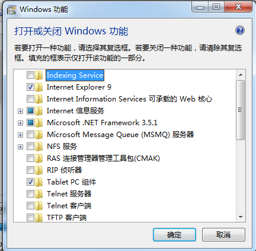
Internet信息服务选项下
Web管理工具 （这里全选）
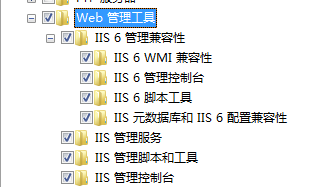
万维网服务 （这里安全性、常见HTTP功能、性能功能全选。应用程序开放功能、运行状况和诊断根据需求选择（CGI选项位于应用程序开放功能里，图一的报错解决）。运行状况和诊断可以有选择性的选择。）
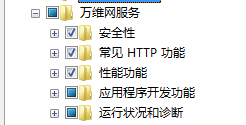
应用程序开放功能、运行状况和诊断选项中，要求必须开启CGI，其他配置请根据实际情况自行设置
应用程序
IIS命令 开始-》运行 cmd net stop iisadmin 停止IIS net start iisadmin 启动IIS net start w3svc WEB服务 IIS重启 开始-》运行 输入iisreset回车
这里启动IIS。安装完成后，打开浏览器输入127.0.0.1或者localhost会出现这样一个页面
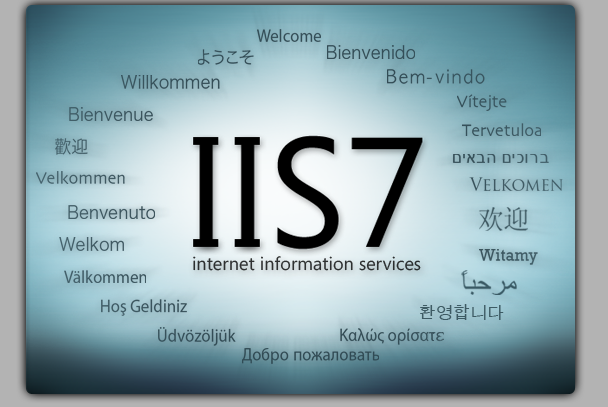
php安装
Web Server Setup页面选择IIS FastCGI
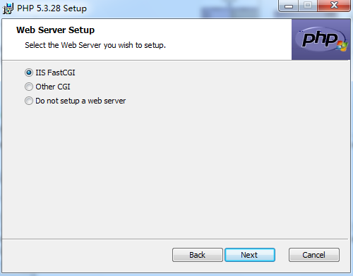
在根目录下新建info.php文件测试php的信息（默认根目录是C:\inetpub\wwwroot\，当然你们的不一定是C盘）
info.php内容
<?php
phpinfo();
?>
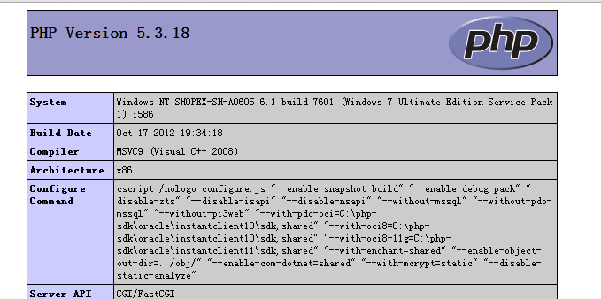
配置zendloader
安装ZendLoader
下载ZendLoader.dll (下载地址 http://pan.baidu.com/s/11lh9H) ，放置在PHP的ext目录下（推荐）[http://pan.baidu.com/s/11lh9H]
编辑php.ini, 修改为
[Zend.loader] zend_loader.enable=1 zend_loader.disable_licensing=0 zend_loader.obfuscation_level_support=3 zend_loader.license_path= ;这一行的ZendLoader.dll文件的路径请根据实际情况自行配置。 zend_extension="D:\PHP\ext\ZendLoader.dll"
注意：把php.ini拷贝到C:\Windows (如果没有这步，无法运行加密的)
增加环境变量
- 变量名：PHPRC
- 变量值：（你PHP安装路径）：D:\PHP\ （如何添加环境变量，这里就不解说了）
命令窗口 php -v出现
Zend Engine v2.3.0, Copyright (c) 1998-2011 Zend Technologies说明Zend Guard Loader没有运行起来，配置有问题。
出现
Zend Engine v2.3.0, Copyright (c) 1998-2011 Zend Technologies with Zend Guard Loader v3.3, Copyright (c) 1998-2010, by Zend Technologies
说明 Zend Guard Loader成功。
重启IIS
上边已经说过IIS的一些命令
phpinfo信息中会出现
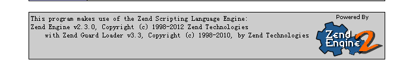
这里一定要有 with Zend Guard Loader...才表示Zend Guard Loader成功。
注意，windows下的apache +PHP 目前是不能使用zend guard 5.5！
注意：现在默认的网站根目录是C:\inetpub\wwwroot,把网的根目录放在C盘太不安全了。
这里我把网站的根目录迁到D盘下边，把C:\inetpub下边的wwwroot文件夹剪贴或者复制到D盘下边
控制面板-》管理工具-》Internet 信息服务(IIS)管理器
定位到
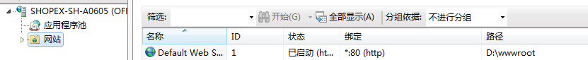
网站上去，右边 路径列
修改这个路径就可以修改网站的根目录了
右键点击Default Web Site这行，选择基本设置
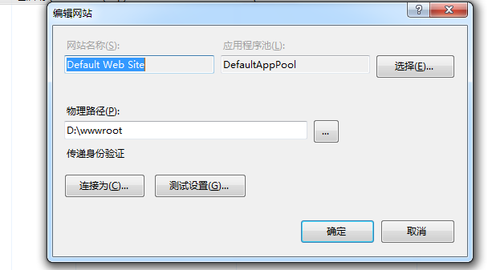
修改物理路径即可。
mysql安装
运行mysql-5.6.10-win32.msi 建议安装D:\mysql目录下
运行D:\mysql\bin\mysqld.exe 启动mysql服务
在命令行下切换目录到D:\mysql\bin，键入mysql -u root -p 回车，如果提示Enter password: 则表示mysql安装成功。默认是空密码。
注意：net start mysql及net stop mysql服务名无效的解决方法
原因是mysql没有加入到window的服务中
解决方法：命令行进入mysql安装路径，输入mysqld --install
ecstore安装
ecstore ego版本的代码是有加密的，所以首先要配置解密工具，其次是获取授权文件，最后才能成功安装ecstore，具体步骤如下
获取ecstore源码安装包
配置授权文件
- 解密文件 developer.zl在安装包中/config/developer.zl下，配置php.ini文件。
;zend_loader.license_path= zend_loader.license_path=***/config/developer.zl
注意：同时运行ecstore1.2与ecstore2.0或者ocs时，请做一下配置， zend_loader.license_path指向一个目录，该目录下同时包含两个developer.zl文件，一个是1.2，一个是2.0的。 请避免俩developer.zl文件重名，1.2的developer.zl改名为1.x.zl，2.0的developer.zl改名为2.x.zl，ocs的developer.zl改名为ocs.x.zl。 例如：zend_loader.license_path="d:/data/html/www/" "d:/data/html/www/"目录下存在ocs.150.zl、ecstore.12.zl、ecsotre.20.zl- 查看phpinfo，看看授权文件是否配置成功
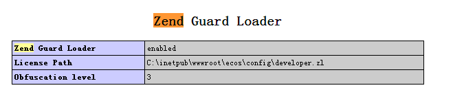 - 如果要用windows作为正式服务器，获取机器码的方式如图(获取机器码的方式其实和linux是一样的，就是用php执行hardware.sh文件，这里要注重的就是php的安装路径和ecstore的config路径)；
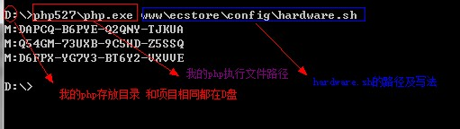 - 重启IIS
- 查看phpinfo，看看授权文件是否配置成功
- 安装ecstore(dos命令行安装 和 网页安装)
- 手动安装采用的是dos命令安装，这个可以查看文档[http://ec-os.net/quickstart/notebook/new-project.html]，文档里有具体的安装操作步骤
- 网页安装是通过网址解析路由来安装，安装网址是您网站的域名后跟”index.php/setup“，例如”localhost/ecstore/index.php/setup“
安装ecstore(dos命令行安装 和 网页安装)
- 手动安装采用的是dos命令安装，这个可以查看文档[http://ec-os.net/quickstart/notebook/new-project.html]，文档里有具体的安装操作步骤
- 网页安装是通过网址解析路由来安装，安装网址是您网站的域名后跟”index.php/setup“，例如”localhost/ecstore/index.php/setup“
常见错误以及解决方案
1、安装PHP过程中，第五步卡住。这里是因为IIS的CGI没有配置，请根据《IIS配置》文档配置后重启IIS（iisreset命令），部分情况需要重启windows。
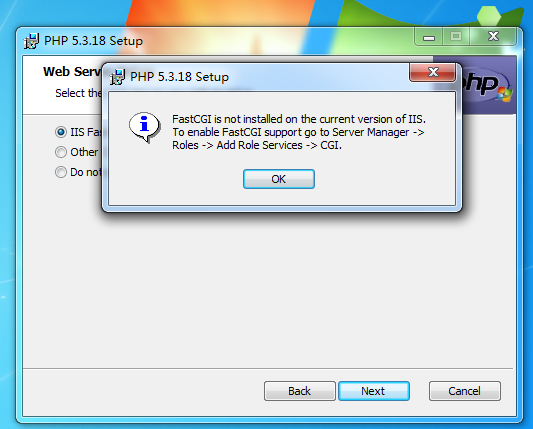
2、打开info.php页面后提示500错误
HTTP错误500.21-Internal Server Error 处理程序“PHP_via_FastCGI”在其模块列表中有一个错误模块“FastCgiModule”
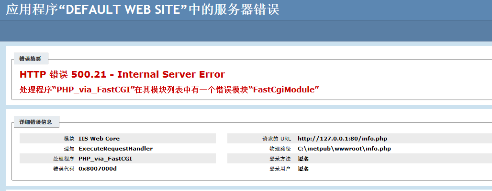是IIS FastCGI没有开启导致的。请在“控制面板”->“程序”->“程序和功能”->“打开或关闭Windows功能”->“Internet信息服务”->“万维网服务”->“应用程序开发功能”中勾选“CGI”。
3、打开info.php页面后提示500错误
HTTP错误500.0-Internal Server Error 无法再<fastCGI>应用程序配置中找到<handler>scriptProcesser
产生原因未知，一般出现在上一个错误修正之后。重装PHP即可解决
4、打开info.php页面后提示500错误
HTTP错误500.0-Internal Server Error %PHP%\php-cgi.exe-FastCGI进程意外退出
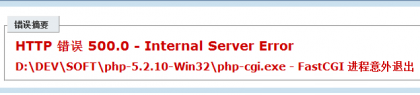由于使用非安装版PHP导致的错误。采用安装版PHP重装即可解决